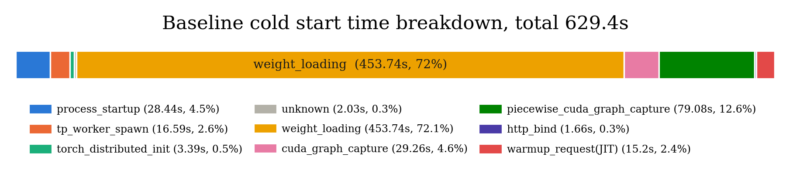
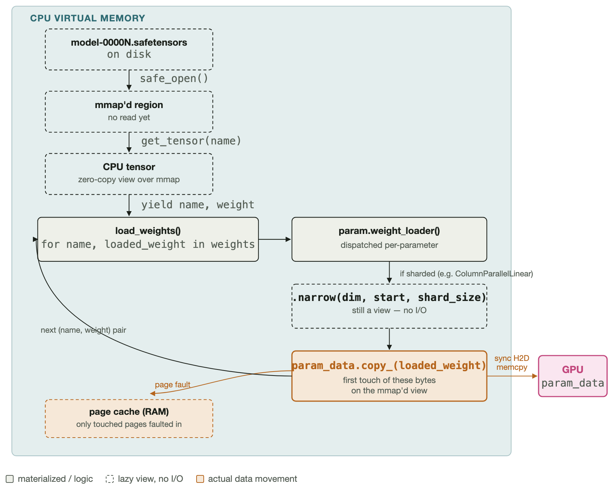
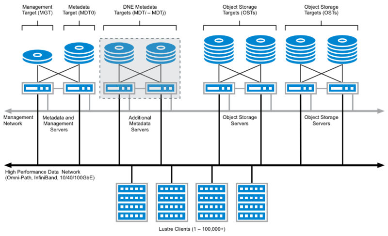
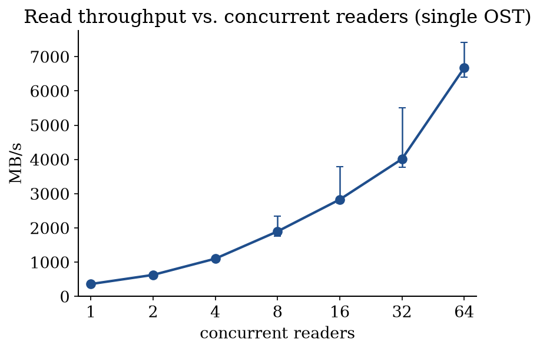
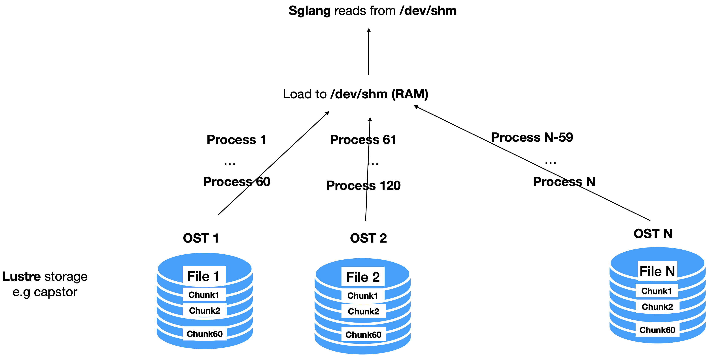
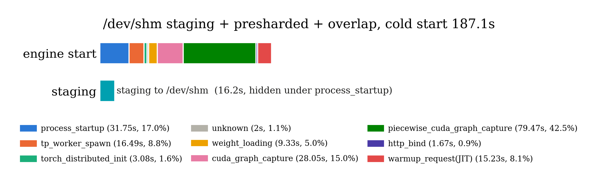

This work has been conducted as an internship at the EPFL AI Center and was supervised by Xiaozhe Yao, Systems Group, EASL, ETHZ.
This summer, I had the opportunity to intern at the EPFL AI Center and work on improving the cold start time of LLMs on the SwissAI serving platform: a research platform for serving LLMs on CSCS clusters on top of SLURM and FirecREST with the goal of enabling researchers to serve and use LLMs. One current limitation of the platform (and many inference engines in general) is that cold start times are long, which slows down research and wastes resources.
In general, inference engines like vLLM or SGLang need to go through many steps before they can serve requests (for e.g., importign the dependencies, loading the model, capturing CUDA graphs, etc.). In the case of the SwissAI serving platform, we observed that most of the cold start time is spent loading weights from a Lustre datastore to the GPU.
In this post, I’ll focus on weight loading from Lustre datastores. I’ll show you how I was able to reduce the weight-loading time from ~827s to ~16s (GLM4.7). The ideas are packaged in a small wrapper called servekit.
Let’s first map the cold start steps to their wall-clock time to
identify the bottlenecks. We can do this by parsing the logs printed by
the SGLang server during the cold start phase. I added the log parser to
servekit as a CLI command:
servekit profile.
For this experiment, we use Llama-3.1-70B-Instruct
served with SGLang v0.5.10 (image lmsysorg/sglang:v0.5.10)
with tensor-parallel size 4 on a single Bristen cluster node, with
weights loaded with the default sglang model loader. SML keeps models in
capstor/store, which is a Lustre file system.

These breakdowns are highly variable: they depend on
capstor contention, per-node differences, and other
factors. This
document compiles 3 runs of the baseline breakdown on different days
with per-phase statistics (mean, stddev, min, max).
As we can see, loading weights from persistent storage
(capstor/store) is by far the most time-consuming step,
with 72% of the total cold start time. It is followed
by CUDA graphs capture (piecewise_cuda_graph_capture +
cuda_graph_capture) which is 17%. The
other steps account for around 11% of the total cold
start time and are mostly JIT compilation and Python package
imports.
Weight loading is clearly the bottleneck. 453.74 seconds for a 70B (141 GB) model is a lot: that is only 0.29 GiB/s. Capstor’s aggregate theoretical bandwidth (across all users and jobs) is a whopping 1.19 TB/s, and we are connected to it with 4 HPE Cray Slingshot-11 NICs with a combined bandwidth of 4 x 23.28 GiB/s, so that NIC bandwidth should be our bottleneck. We should be able to do much better than 0.29 GiB/s.
So let’s try to understand:
Why is the default weight loader so slow in our setup?
The default SGLang loader uses mmap to load the weight
files.
But what is mmap? (I wrote a longer explanation of how
mmap works here.) mmap
is a system call that maps a virtual memory region to a file. That
memory region will not be mapped to a physical memory region until it is
accessed a first time. When a mmaped page is accessed for
the first time, the kernel will realize that the virtual page does not
have a corresponding physical page but is mmaped to a file.
So it will load the corresponding page from disk to the page cache (RAM)
and then associate the virtual page with the page cache page. This is
called a major page fault. On subsequent access, the
virtual page is already mapped to a physical page in the page cache and
no disk access is needed. This is called a minor page
fault. 1
Concretely, in our Llama example, the DefaultModelLoader
calls methods like
multi_thread_safetensors_weights_iterator, which return an
iterator over pairs (tensor_name,
tensor_weights) where tensor_weights is an
mmap’ed tensor. This iterator is passed to
LlamaForCausalLM, which passes each parameter (like
ColumnParallelLinear) its tensor weights. The parameter
will then get a view of its needed weights according to its rank
(tp_rank in the case of ColumnParallelLinear)
and will then initiate a host (CPU) to device (GPU) copy of the
weights.

My hypothesis is that this triggers a major page fault for each page touched, which gets loaded from Lustre going through the network to the page cache and then copied to GPU. This would be a very slow process, especially for large models with many tensors spread over many pages. 2
To check this, we run the exact same experiment with SGLang’s
--weight-loader-disable-mmap, which skips mmap
entirely.
We get 45.7s for weight loading, which is 9.9x faster than the default loader and corresponds to 2.8GiB/s.
Lesson. For weight loading using an HDD-backed Lustre file system, using
mmapis a bad idea. The simple--weight-loader-disable-mmapflag is a huge improvement.
This still leaves another possible explanation: maybe it’s not
mmap itself but the many small host-to-device copies it
causes. Let’s try another one-flag method that does not use
mmap: fastsafetensors 3
(--load-format fastsafetensors) partitions files across TP
ranks; each TP process reads a file with pread and then
exchanges the weights with other TP ranks using NCCL communication.
Once all weights are on each GPU, tensors are parsed one by one
directly in GPU memory. This eliminates the need for small tensor
copies from host to device. If the small copies were the real
bottleneck, this should beat
--weight-loader-disable-mmap.
We get 59.1s for weight loading, which is
7.7x faster than the default loader but worse than
--weight-loader-disable-mmap. This confirms again that the
bottleneck was mmap and not the small tensor copies from
host to device.
This is a huge improvement and shows that mmap is not
suitable for weight loading on Lustre file systems. However,
2.8GiB/s is still far from the theoretical maximum of
4x23.28 GiB/s. Let’s see if we can do better.
Let’s set SGLang aside for a moment and ask a simpler question:
Irrespective of SGLang, how fast can we load files from Lustre?
Across OST parallelism. Lustre is a distributed file
system that saves files across different Object Storage Targets
(OSTs). Each OST is a storage volume that can be accessed
independently. To increase the read bandwidth, we need to distribute the
model weights across multiple OSTs so we can benefit from parallelism
across OSTs. In our case, we will have each .safetensors
file in a different OST. For models like
Llama-3.1-70B-Instruct, there are 30
.safetensors files.

However, single OSTs also benefit from having many requests in flight.
Within OST parallelism. Even within a single OST, we can increase the read bandwidth by having multiple processes reading from the same OST in parallel. This is because each process can issue its own I/O requests, and the OST can handle these requests concurrently.
How many parallel readers does a single OST need to reach its full read bandwidth?
To answer this, we will experiment with dd iflag=direct.
This command lets us read files from disk without going through the page
cache. We can use it as follows:
dd iflag=direct if=input.bin of=output.bin bs=16M, where
bs=16M is the block size, i.e. the amount of data read from
disk in one request. In our experiment, we use bs=16M and
read to /dev/null to measure the read speed. We study the
effect of the number of parallel dd processes on the read
speed.
per=$(( 256 / nprocess ))
t0=$(date +%s.%N)
for ((i=0;i<nprocess;i++)); do
dd if="${SICK}" of=/dev/null bs=16M skip=$((i*per)) count=$per iflag=direct status=none &
doneWe measure this on a single-striped 4.6 GB shard, reading a 4 GiB
window of it (bs=16M, O_DIRECT, to
/dev/null) while sweeping the number of parallel
dd processes over disjoint, contiguous byte ranges of the
same file. Each point is the median of 3 runs; bars span min to max:

Throughput scales close to linearly with reader count up to 8, then keeps climbing sublinearly: 64 readers reach 6.7 GB/s, an 18x speedup over a single reader, and the curve has still not flattened. With many processes, we are able to keep many RPCs in flight, improving the bandwidth.
Lesson. To maximize bandwidth on Lustre storage with
O_DIRECTreads (no page cache), we need parallelism both across OSTs and within a single OST.
Equipped with this knowledge, we try the following:
/dev/shm (RAM), and then use SGLang’s
default loader from /dev/shm to GPU. The staging takes
7s, which is more than 18 GiB/s, already
much better than everything we have seen before. The weight loading
takes 20s, which is > 6 GiB/s. Overall,
this is a 16x speedup over the default loader.
This idea is possible because each node in both our clusters
(Bristen and Clariden) has more RAM than GPU RAM. This means a node’s
specific shard of weights can always be stored in RAM if we preshard the
weights across nodes. This is what we do next. We use
--load-format sharded_state, which lets us save our weights
by their TP rank. One added benefit is that our weights are now
contiguous for each rank, which speeds up our H2D reads (see
below).
Additionally, we can overlap the staging with the SGLang server
launch. This is possible because the first steps
(process_startup, tp_worker_spawn,
torch_distributed_init) do not need the weights. We can
start staging to /dev/shm while the server is still in
process_startup. This is what I report below as
/dev/shm staging + presharded + overlap.
Staging to /dev/shm is better than warming up the
page cache for models that don’t fit in a single node. For these, to
warm all the weights a rank needs, we would need to fill the page cache
with all weights of the model which don’t fit in the RAM.
Staging to /dev/shm is different from using
--weight-loader-disable-mmap in two ways.
--weight-loader-disable-mmap, each rank
still reads the complete model weights: although it discards
most of it and keeps only its shard, it still reads all of it.
This means the total size of weights loaded increases
linearly with the node count. In our method, it remains
constant.--weight-loader-disable-mmap has 8 threads by default, each
running a pread on a file. If our files are big, this will
overflow RAM.Weight loading experiments (s), Bristen
| config | weight_loading (s) | speedup | total cold start (s) |
|---|---|---|---|
| default loader | 453.7 | 1.0× | 629.8 |
| nommap | 45.7 | 9.9× | 214.7 |
| fastsafetensors | 59.1 | 7.7× | 230.0 |
| /dev/shm staging + mmap | 20.1 + 7.7 (stage) | 16.3× | 194.7 |
| /dev/shm + TP-presharded | 8.8 + 7.4 (stage) | 28.0× | 170.8 |
| /dev/shm staging + presharded + overlap | 9.7 | 47.0× | 179.0 |
/dev/shm + presharded + overlap
ran before the default loader experiment.Here’s the current breakdown of the cold start of our best method, /dev/shm staging + presharded + overlap. The weight loading is not the bottleneck anymore, the cuda graph capture is.

I packaged the above ideas into a small wrapper called
servekit that can be used to launch SGLang servers with
fast cold starts. It is not a new serving engine: it simply stages and
launches SGLang with the optimizations described above. Currently,
servekit implements fast weight loading and JIT kernel
caching (the latter is outside the scope of this post).
servekit
has a main command, servekit launch, which takes a normal
SGLang command as an argument and launches it with optimizations.
servekit launch --servekit-artifact-path <dir> \
-- python -m sglang.launch_server --model-path <model> --tensor-parallel-size 4 ...servekit also offers several utilities, such as
servekit profile, servekit bench and
servekit verify, to profile a cold start, benchmark a
running server, and verify that the server produces the same numbers as
a trusted reference. You can find documentation for these commands in
the servekit
README.
Comprehensive results
We evaluate servekit against the default loader,
--weight-loader-disable-mmap and
--load-format fastsafetensors on multiple models.
Config
| Apertus-8B-Instruct-2509 | Llama-3.1-70B-Instruct | GLM-4.7 | |
|---|---|---|---|
| size | 16 GB | 141 GB | 717 GB |
| parallelism | TP4 | TP4 | TP4-PP4 |
This sweep uses SGLang v0.5.16 (image
lmsysorg/sglang:v0.5.16).
Weight loading time (s) on Bristen
| Loader | Apertus-8B-Instruct-2509 | Llama-3.1-70B-Instruct | GLM-4.7 |
|---|---|---|---|
| default loader (mmap) | 78.0 | 737.0 | 827.9 |
--weight-loader-disable-mmap |
9.5 | 46.0 | 294.9 (num_threads=4) |
--load-format fastsafetensors |
17.9 | 61.3 | 143.8 |
| servekit (shm, no overlap) | 3.3 + 2.0 | 9.3 + 14.2 | 10.6 + 16.4 |
| servekit (shm, overlap) | 2.1 | 14.3 | 16.2 |
Weight loading time (s) on Clariden
| Loader | Apertus-8B-Instruct-2509 | Llama-3.1-70B-Instruct | GLM-4.7 |
|---|---|---|---|
| default loader (mmap) | 92.8 | 794.2 | 861.6 |
--weight-loader-disable-mmap |
4.5 | 27.8 (num_threads=4) | 263.7 (num_threads=2) |
--load-format fastsafetensors |
11.9 | 48.6 | 113.8 |
| servekit (shm, no overlap) | 1.1 + 0.9 | 5.1 + 6.0 | 40.8 + 6.5 |
| servekit (shm, overlap) | 0.9 | 6.0 | 6.7 |
--weight-loader-disable-mmap OOMs on GLM-4.7, so we had
to reduce the number of threads to 4 on Bristen and 2 on Clariden.
Similarly, it OOMs on Llama-3.1-70B-Instruct on Clariden, so we had to
reduce the number of threads to 4.fastsafetensors does not work for multi-node currently;
the reported result for GLM-4.7 is a patched version.Lesson. The one-flag loaders read the full model on every rank, so load time grows with node count.
servekitstages only each node’s shard, so it stays roughly constant: GLM-4.7 (717 GB) loads about as fast as Llama-70B (141 GB), ~16s vs. ~14s.
servekit’s limitations
On Correctness: We rely on
ShardedStateLoader, the loader behind
--load-format sharded_state, which we discovered contained
some bugs. To spot bugs, we use
servekit verify --url <ip> -record gold.json to
record the gold logprobs of a model served with the default loader, and
then use
servekit verify --url <ip> -compare gold.json to
compare the logprobs of the same model served with
servekit. This is a very strict test that checks that the
logprobs are equal up to 1e-6. All models above pass this
test. However, some models currently don’t, because of bugs in
ShardedStateLoader (e.g. gpt-oss-20b). It is
therefore important, when using servekit, to first check
that your model is supported with servekit verify. See this
sbatch script for an example of how we use
servekit verify to check a model (GLM-5.1-FP8, multinode,
TP4/PP4/EP4) against a baseline before trusting the presharded loader
for it.
Here are the bugs I discovered that I raised to the SGLang team:
sharded_state
cannot save and load an MLA model (#35702)
servekit now patches sglang to fix this issue, but it
is not a permanent solution.The following PRs fix the aboves issues respectively:
On ergonomics: Presharding the models implies a
separate prepare step; servekit tries to simplify this by
doing it automatically on the first run, so users don’t need to worry
about it. When running
servekit launch --servekit-artifact-path <path> python -m sglang.launch_server ...,
a presharded copy of the model is created in <path>.
This causes a first run to be slower than the default loader.
servekit vs. the other loaders
| Method | Pros ✅ | Cons ❌ |
|---|---|---|
| default loader (mmap) | Really slow on Lustre | |
--weight-loader-disable-mmap |
One flag, 2.8x to 16x faster than default | - OOMs on large models (GLM-4.7), needed num_threads=4
to fit- Loads all weights per rank so scales badly with model size - Needs a full node: 3.9x slower at 32 CPUs than at 128 |
--load-format fastsafetensors |
- One flag, significant speedups | - Doesn’t work for multi-node yet; GLM-4.7 result needed a patched
version - Scales badly with node count due to costly NCCL through Slingshot |
| servekit | - Fastest across all models - If model size scales linearly with node count, weight size loaded per node is constant and so is time (see Llama vs. GLM-4.7, 14s vs. 16s) |
- Slower first run - Relies on ShardedStateLoader, a
correctness check is needed |
I learnt a lot in this project! I hope this post will be of help to
you if you are facing slow weight loading times. If you use HDD backed
Lustre storage for you weights and you want to try servekit,
do not hesitate to reach out to me at my email: “name dot family name at
epfl dot ch”. I will be happy to help you get started with it.
A threadpool of size 8 is used to do mmap in parallel.↩︎
Actually, when a page fault happens a certain number X of pages is loaded at once for efficiency, thanks to readahead. This X is set by the Lustre client. However, even with this in mind, the general intuition that this causes many small network round trips remains.↩︎